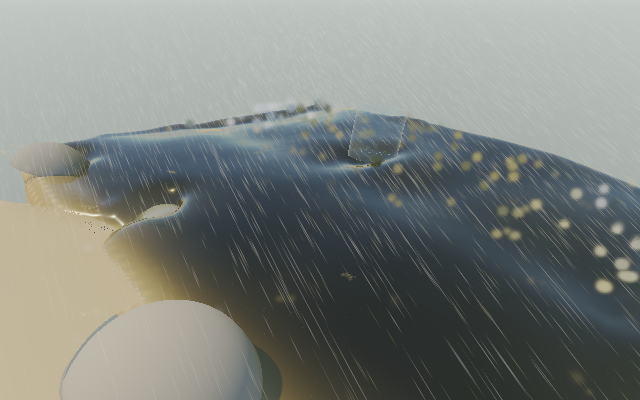

The connected WebGPU beach now keeps particle positions, velocities, chemistry, neighbor counts and the sampled air field in persistent GPU buffers between steps. Unchanged parcels are no longer repacked and uploaded. GPU wind/gravity prediction uses the same forces and travel limit. Sparse CPU edits synchronize grabs, dye, rain impulses and other tools. Count changes, resets and intervening CPU steps reseed safely.
This is persistent GPU ownership with CPU feature mirrors, not a zero-readback engine. The complete live renderer, rigid bodies, sand wetting, rain, foam, picking and scalar fields still need CPU data. The final state readback remains. First-person prediction stays on the CPU to preserve player impulse handling. The optimization is independently switchable, and CPU/WebGL remain available.
Mac / AMD GCN-4, native WebGPU drawing and connected physics on one device. Same full beach renderer, camera, resolution, wind 24, rain off and organic load 0. Each comparison uses four ABBA blocks: 12 warmup frames, then 48 measured frames per block. Every frame advances one fixed 1/15 s step, draws the full beach and waits for GPU completion. No camera-dependent physics, reduced shaders, extra queued frames or different timestep. These are bounded viewport measurements, not full-window or RTX results; no claim about zero-readback prototype speed.
| View / water parcels / grid cells | Before FPS → after | Realtime before → after | Physics ms before → after | Gain in FPS/realtime |
|---|---|---|---|---|
| 320×200 / 1,164 / 2,016 | 7.65 → 8.98 | 0.510× → 0.598× | 51.13 → 47.37 | 17.3% |
| 640×400 / 3,024 / 3,553 | 6.25 → 6.57 | 0.417× → 0.438× | 64.66 → 62.62 | 5.1% |
Normal particle uploads fall 94.1%: 79,152 → 4,656 bytes/step and 205,632 → 12,096 bytes/step. The remaining upload is exact CPU occupancy classification, avoiding rounding differences at cell boundaries. Geometry and field metadata uploads are not included in these particle-upload figures. Total physics readback is unchanged at 262,324 and 537,684 bytes/step respectively. Added fixed storage is bounded; the complete compute pipeline uses about 44.9 MiB excluding staging readback.
Pooled p95 frame work improved 205.5 → 173.8 ms and 204.5 → 180.6 ms. Outliers remain (including ~0.56 s in the larger run), so this does not establish smooth long-running performance. At the larger setting the isolated particle-job wall time rose slightly even while complete-frame time improved; do not describe every stage as faster.
74 relevant numerical/resource/regression tests and npm run build pass.

The next structural step is direct reconstruction from the resident water buffers, together with GPU coupling queries for bodies, rain, wetting, foam and picking. Port these consumers before removing full mirrors; stale or missing water data would break buoyancy and interactions. CPU occupancy/topology, scalar transport and terrain/body simulation remain. Do not substitute the faster reduced water-only prototype for the complete scene.
320×200 raw timings and validation · 640×400 raw timings and feature playback · Lifecycle and fallback results · Bounded test controls (no work on load) · Live WebGPU beach, paused